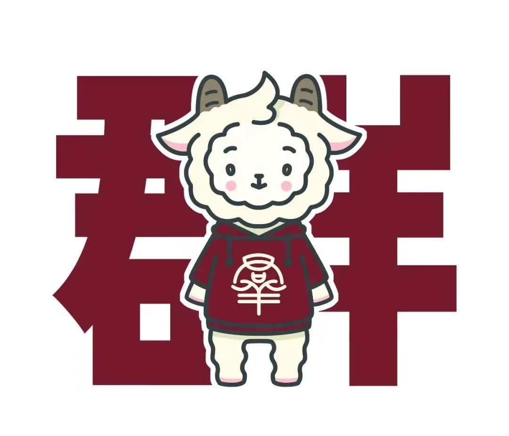
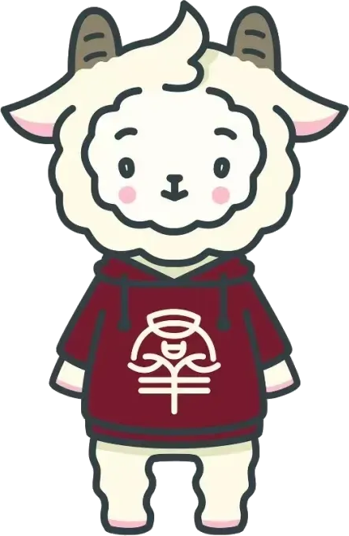

同一张图、六种纯 CSS 处理（白底用 multiply 自动消隐）。落地只需一张图 + 滤镜，不必预先抠图；若要任意深色底使用，再额外导一张透明 PNG。

左：浅底，吉祥物站在登录卡旁迎宾 +「群羊」淡水印（multiply 去白底，松石青调）。右：保留信箱实拍深底，吉祥物只做一枚圆角头像角标。

社 系 毕 业 晚 会 解 密
一二层与中庭里寻线索，最后唱出终章口令。
A · 吉祥物主视觉（推荐）
最有"社会学系毕业"的归属感；调色后与松石青统一。
理 科 五 号 楼
学号与手机号开启这一程，进度自动保存。
B · 实拍 + 头像角标
更克制、更"现场"；吉祥物只是点睛角标。
这些是"自然出现"的候选位；建议只选其中几处，保持克制。
初入燕园，你认出反复写下的社字……
吉祥物天然适合"入口"。方案 A（主视觉）归属感最强；若想更素，用方案 B 头像角标。
小羊头圆章常驻顶栏、页脚放极淡「群羊」水印——低调、全程在场。
「群」字做品牌印章很搭；通关时小羊探出庆祝增加情绪。用调色或头像圆章版本。
会撞色、抢戏、破坏素雅气质。要用就先调色/线稿，且别整只大面积出现在答题区。
回声里的 社/右/行/二/三/一 是终章谜题线索，不能换成小羊；小羊只做装饰。